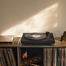
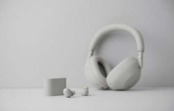
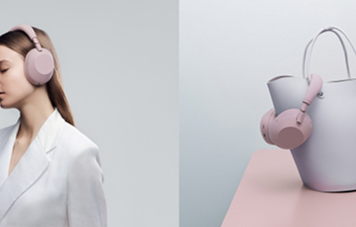

소니코리아, 조작이 간편한 블루투스 턴테이블 ‘PS-LX5BT’ 출시
2026-02-11
러닝 붐이 지속되면서 달리기 중 음악이나 콘텐츠를 함께 즐기는 이들도 늘어나고 있다. 이에 러닝에 적합한 가볍고 착용감이 안정적인 오디오 기기에 대한 수요 역시 확대되는 추세다. 소니코리아는 야외 활동이 증가하는 봄 시즌을 앞두고 광고 캠페인을 통해 러닝부터 일상까지 활용할 수 있는 아이템으로서 링크버즈 클립의 차별화된 매력을 선보였다
2026-02-24소니코리아가 러닝 크리에이터 ‘스톤러닝(STONE RUNNING)’과 협업해 클립 타입 오픈형 이어폰 '링크버즈 클립(LinkBuds Clip)'의 신규 광고 캠페인을 전개한다고 24일 밝혔다.

소니코리아가 강력한 노이즈 캔슬링 성능과 프리미엄 사운드를 자랑하는 6세대 플래그십 무선 노이즈 캔슬링 이어폰 ‘WF-1000XM6’를 국내 정식 출시한다고 23일 밝혔다.

소니코리아가 플래그십 무선 노이즈 캔슬링 헤드폰 WH-1000XM6의 신규 컬러 ‘샌드 핑크’를 출시한다고 13일 밝혔다.
소니코리아가 러닝 크리에이터 ‘스톤러닝(STONE RUNNING)’과 협업해 클립 타입 오픈형 이어폰 '링크버즈 클립(LinkBuds Clip)'의 신규 광고 캠페인을 전개한다고 24일 밝혔다.
소니코리아가 강력한 노이즈 캔슬링 성능과 프리미엄 사운드를 자랑하는 6세대 플래그십 무선 노이즈 캔슬링 이어폰 ‘WF-1000XM6’를 국내 정식 출시한다고 23일 밝혔다.
소니코리아가 플래그십 무선 노이즈 캔슬링 헤드폰 WH-1000XM6의 신규 컬러 ‘샌드 핑크’를 출시한다고 13일 밝혔다.
소니코리아가 러닝 크리에이터 ‘스톤러닝(STONE RUNNING)’과 협업해 클립 타입 오픈형 이어폰 '링크버즈 클립(LinkBuds Clip)'의 신규 광고 캠페인을 전개한다고 24일 밝혔다.
소니코리아가 강력한 노이즈 캔슬링 성능과 프리미엄 사운드를 자랑하는 6세대 플래그십 무선 노이즈 캔슬링 이어폰 ‘WF-1000XM6’를 국내 정식 출시한다고 23일 밝혔다.
소니코리아가 플래그십 무선 노이즈 캔슬링 헤드폰 WH-1000XM6의 신규 컬러 ‘샌드 핑크’를 출시한다고 13일 밝혔다.